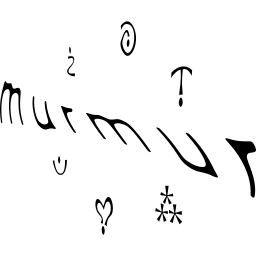

English / Français
ghghgh
Murmur, c’est un rassemblement de fin d’été qui amène au centre ce qu’on retrouve d’habitude en périphérie de la vie nocturne montréalaise (et d’ailleurs) : écoute immersive, ateliers divers/partage de savoir & dancefloors répartis à travers un festival.
Les festivités commencent au coucher du soleil le vendredi 11 septembre 2026 et se terminent au coucher du soleil le dimanche 13 septembre. Tout le monde peut rester sur le site jusqu’au lundi matin pour repartir reposé·e et en sécurité.
Le rassemblement a lieu au pied d’une forêt ancestrale protégée, sur le territoire traditionnel non cédé des Nations algonquine, huronne-wendat & anishinabewaki. Aujourd’hui, le site est une grande coopérative naturelle située dans les Laurentides, à environ 1h30 ~ 2h au nord de ‘Montréal’.
Pour le week-end, on occupe un site privé au bord d’un lac, sans voisinage immédiat, avec sauna, kayaks, sentiers de randonnée & ciel étoilé à volonté inclus dans l’expérience. Merci à nos ami·es de Bohême Système d’avoir imaginé les premiers rassemblements ici et de nous avoir fait découvrir ce magnifique terrain de jeu.
Murmur se construit autant par la participation que par la programmation : viens contribuer, pas seulement consommer. On t’invite à donner vie à tes idées étranges, partager tes savoir-faire, laisser sortir ton côté freak ou simplement donner un coup de main pour rendre ce projet possible. Plus d’infos à venir.
Tous les Murmites dorment sur le site. La majorité des billets incluent un hébergement en dortoir partagé ou en chalet. Réserve une cabine avec tes ami·es ou arrive en solo et fais de nouvelles rencontres sur place. Des options de camping seront aussi disponibles.
Les abonné·es à l’infolettre auront un premier accès aux billets.